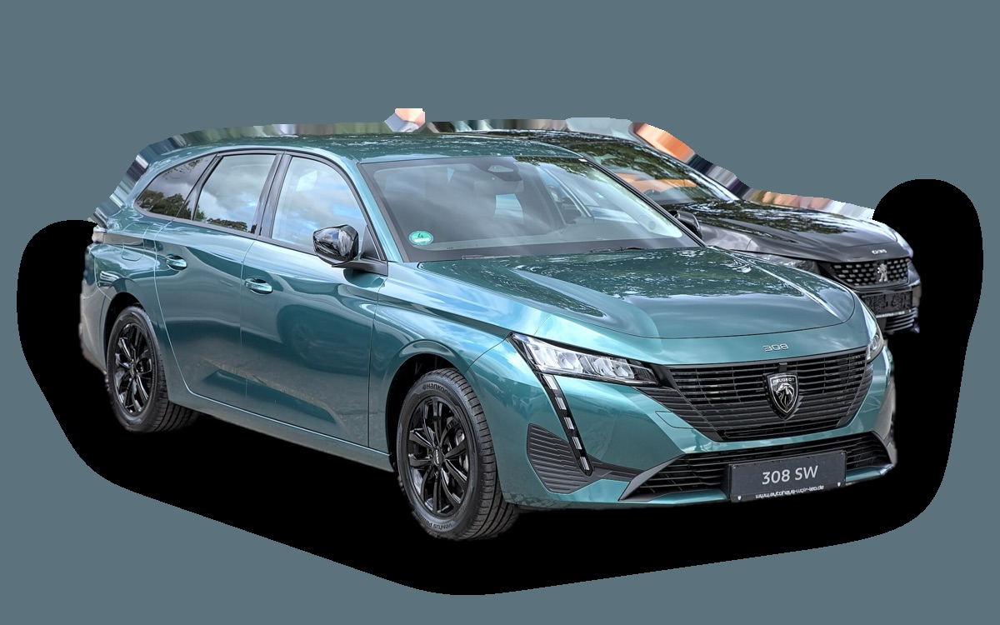

Vad kostar en Peugeot 308 SW per månad?
En Peugeot 308 SW från 2023 kostar cirka 3 622 kr i månaden, allt inräknat.
3 622 krper månad, årsmodell 2023
189 000 krpris, årsmodell 2023
288 900 krnypris från
Cprisvärdhetsbetyg (2023)


Månadskostnad per årsmodell
| Årsmodell | Version i beräkningen | Pris | Per månad | Betyg |
|---|---|---|---|---|
| 2026 | Hybrid 136, Active | 288 900 kr | 4 681 kr | D |
| 2023 | PureTech 130 automat, Active | 189 000 kr | 3 622 kr | C |
Räknat på 5 års ägande och 1 250 mil per år, med bränslepriser från 2026-10-22. Månadskostnaden innehåller värdeminskning, drivmedel, service och reparationer, försäkring och fordonsskatt.
Så fördelas kostnaden för en 2023:a
- Värdeminskning: 1 285 kr/mån
- Drivmedel: 1 250 kr/mån
- Service och reparationer: 593 kr/mån
- Försäkring: 421 kr/mån
- Fordonsskatt: 73 kr/mån
Begagnatpriser i annonser
| Årsmodell | Medianpris | Annonser | Typiskt miltal |
|---|---|---|---|
| 2025 | 274 800 kr | 25 | 2 900 mil |
| 2024 | 224 900 kr | 15 | 4 400 mil |
| 2023 | 225 000 kr | 7 | 4 900 mil |
| 2022 | 204 000 kr | 22 | 5 400 mil |
Medianpriset i svenska annonser per årsmodell i oktober 2026 (källa: Blocket, BilKoll). Annonspriser är utgångspriser, och slutpriset kan bli lägre.
Motorer och versioner
| Motor | Drivmedel | Effekt | 0–100 km/h | Förbrukning (WLTP) | Räckvidd | Årsmodeller | Pristillägg |
|---|---|---|---|---|---|---|---|
| PureTech 130 automat | Bensin | 130 hk | 10,2 s | 5,8 l/100 km | – | 2022–2024 | – |
| Hybrid 136 | Hybrid | 136 hk | 10,2 s | 5,1 l/100 km | – | från 2024 | −5 000 kr |
| Laddhybrid 180 | Laddhybrid | 180 hk | 7,6 s | 2 l/100 km + 13,5 kWh/100 km | – | från 2022 | +115 000 kr |
| E-308 SW 156 | El | 156 hk | 9,8 s | 15,6 kWh/100 km | 410 km | från 2023 | +100 000 kr |
- Utrustning: Active, Allure (+25 000 kr), GT (+45 000 kr)
Fakta
- Kaross
- Kombi
- Årsmodeller
- sedan 2022
- Nypris från
- 288 900 kr
- Bagage
- 608 liter
- Euro NCAP
- 4 av 5 stjärnor
- Nybilsgaranti
- 3 år
- Driftsäkerhet
- 3 av 5
- Helförsäkring, uppskattning
- 6 800 kr/år
- Service, uppskattning
- 3 700 kr/år
Vanliga fel att ha koll på
- Kamrem i oljebad löses upp (1,2 PureTech), reparation cirka 11 000 kr
- Motorhaveri efter kamremsfel, reparation cirka 50 000 kr
- Oljeförbrukning och sot (1,2 PureTech), reparation cirka 3 000 kr
Felen gäller vissa motorer och årsmodeller. I kalkylatorn räknas risken för just den version du väljer.
Fördelar och nackdelar
Fördel
Stort bagage och snygg interiör.
Nackdel
Den lilla ratten passar inte alla förare.
Liknande bilar
 Mazda6 Kombi3 633 kr/mån som 2019:a
Mazda6 Kombi3 633 kr/mån som 2019:a Opel Astra Sports Tourer3 594 kr/mån som 2023:a
Opel Astra Sports Tourer3 594 kr/mån som 2023:a Volvo V60 I3 654 kr/mån som 2015:a
Volvo V60 I3 654 kr/mån som 2015:a Volkswagen Golf Sportscombi3 587 kr/mån som 2023:a
Volkswagen Golf Sportscombi3 587 kr/mån som 2023:a Cupra Leon Sportstourer3 758 kr/mån som 2023:a
Cupra Leon Sportstourer3 758 kr/mån som 2023:a Volvo V703 480 kr/mån som 2013:a
Volvo V703 480 kr/mån som 2013:a
Uppdaterad 2026-10-27 · annonsdata okt 2026